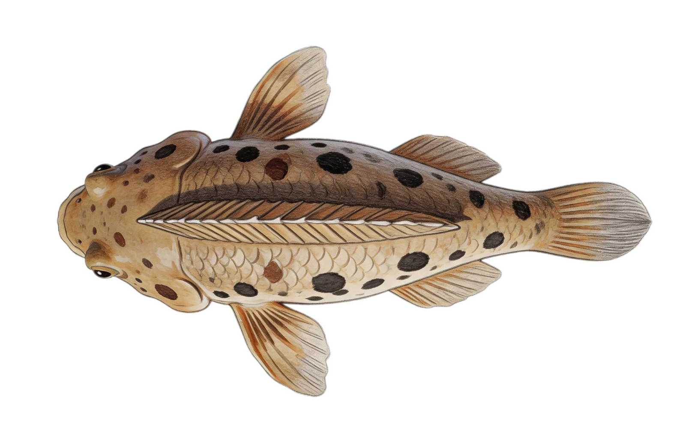
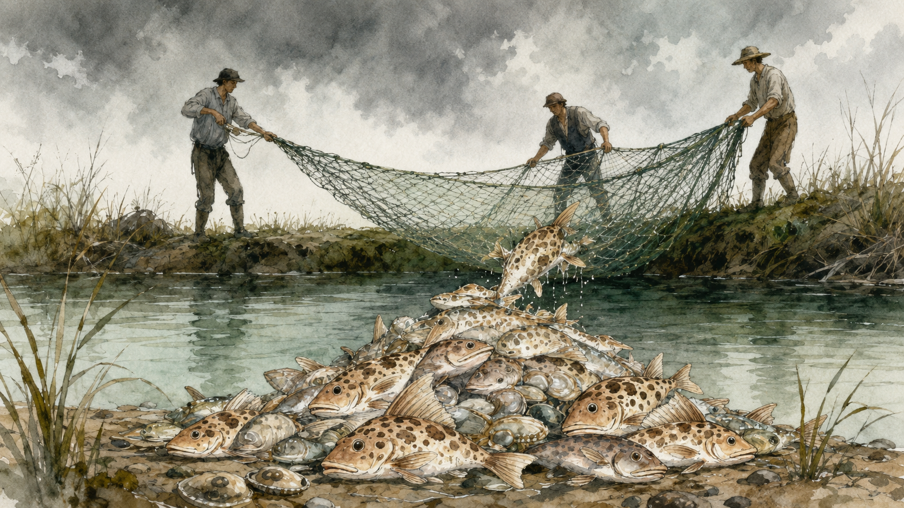

序幕 · 玻璃盒子的开端
“我出生在一个玻璃盒子里。他们说我是'清道夫'，能吃掉所有脏东西。但我没想到，有一天我会被倒进一条河。
那条河，后来成了我的王国。”
那条河，后来成了我的王国。”
—— 清道夫的自白
第一幕 · 入侵 · “我来了”
第二幕 · 征服 · “这里没有对手”
“这里的水温刚好，食物满地，而且——没有天敌。他们嫌我丑，嫌我脏，但在我眼里，他们都是软骨头。”

💡 点击上方按钮，查看清道夫的“战斗力参数”
第三幕 · 坍塌
“河流正在死去”
“我把水草啃光了，把鱼卵吃光了，把河岸钻出千疮百孔的巢穴，这条河越来越安静。
他们怪我，可……明明是你们把我放进来的。”
他们怪我，可……明明是你们把我放进来的。”
第四幕 · 绝望 · “人与鱼的拉锯战”
“他们开始恨我，一网一网地捞，一车一车地埋，但都没有用。他们想过吃我，可我全身是骨头，肚子里全是泥。他们说我是'生态死士'，杀不死，用不掉，甩不掉。”

🐟 点击图片查看“无用功”循环
第五幕 · 叩问 · “那条河，还回得去吗？”
“他们终于开始问：是鱼的问题，还是人的问题？每一年，都有像我一样的'异乡人'，被一双双不负责任的手，送进不属于它们的水域。”


🌿 曾经的河岸嬉戏
⚠️ 异宠入侵之手
第六幕 · 烽火
“每个人都是哨站”
“所以，在你看到我的故事时，战争还在继续。但这场战争不是没有终点，那个终点，不在渔网里，而在每一个做出不同选择的人手中。”
🚫
哨站一
不随意放生
🛑
哨站二
不购买危险物种
📢
哨站三
发现即报告
🌍
哨站四
传播即守护
点击任意哨站，解锁防线数据
尾声 · 回响
“我生来不是怪物。但如果再有一次，我希望我从未踏进那条河。”
别让一条鱼，吃掉整条河。